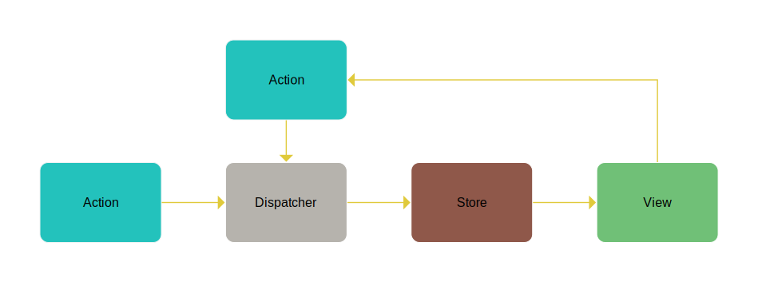

Shadow-Flux is an implementation of Facebook’s FLux pattern. It is simple to understand and to use.
Introduction
First, let’s present the different elements:

Action |
It allows to specify a change through the Dispatcher. |
Dispatcher |
It allows to manage all the change requests, and forwards the requests to the Stores. |
Stores |
Process change requests and update their data model |
Views |
These are React components that will update their display according to the new state of the Stores data model. |
Action
An Action represents the element by which a change will take place. This action has at least one piece of information, its type.
The type is the only field required to identify an action. It is possible to complete an action by adding as much information as necessary.
At a minimum, an action can be represented as follows:
Typescript :
// Action type
type Action = {
type: string;
}
// Sample action
const action = {
type: "myAction"
} as Action;
Javascript :
const action = {
type: "myAction"
}
An action is therefore determined by its type, and the additional fields will allow Stores to process the action in the best way.
For example imagine that we wanted to obtain the price of a plane trip, we will have at our disposal the airport of departure, arrival, the number of passengers, and the date of departure. Our Action could be defined as follows:
type GetTripPriceAction = {
type : "GetTripPriceAction" ;
numberOfPax : number ;
departure : string ;
arrival : string ;
}